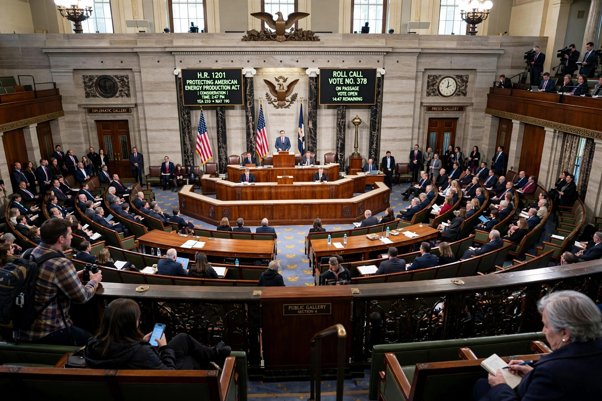

Speech or Debate Clause
The Speech or Debate Clause is a clause in the United States Constitution (Article I, Section 6, Clause 1) that provides members of Congress with immunity from arrest or questioning for their legislative acts. It states that Senators and Representatives "shall in all Cases, except Treason, Felony and Breach of the Peace, be privileged from Arrest during their Attendance at the Session of their respective Houses, and in going to and returning from the same; and for any Speech or Debate in either House, they shall not be questioned in any other Place."

Purpose
The clause was modelled on provisions in the English Bill of Rights of 1689 protecting freedom of speech in Parliament. Its purpose is to protect the independence of the legislature from intimidation by the executive branch or the courts, allowing members to speak and vote freely in the course of their legislative duties. It is a form of legislative immunity.
Scope
The Supreme Court has interpreted the clause broadly to cover all acts that are an integral part of the deliberative and communicative processes of Congress, including committee hearings, reports, and voting. It protects not only speeches on the floor but also legislative aides performing acts that would be privileged if performed by the member personally.
The protection is not unlimited. It does not cover:
- Political activities such as press releases, newsletters, and speeches delivered outside Congress
- Criminal conduct such as accepting bribes, although evidence of legislative acts may not be used in such prosecutions
- Republications of defamatory statements outside the legislative sphere
Key cases
In Gravel v. United States (1972), the Court held that the clause protected a senator's conduct at a committee meeting at which the Pentagon Papers were read into the record, and protected his aide, but did not cover arrangements for private publication of the papers. In United States v. Brewster (1972), the Court held that taking a bribe is not a legislative act and may be prosecuted without inquiring into legislative activity.
See also
Categories: United States constitutional law | Clauses of the United States Constitution | United States Congress